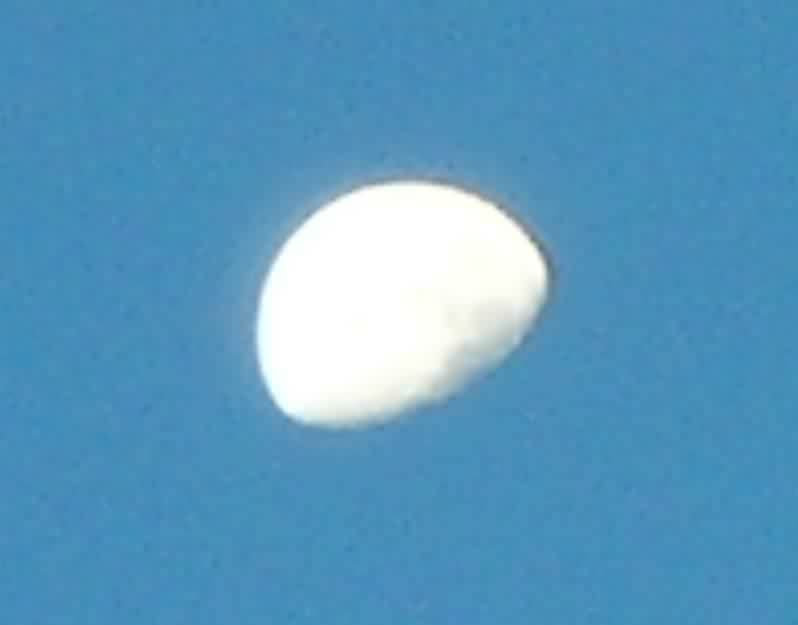

Mond am Tag
Kann man den Mond am Tag sehen? Können Mond und Sonne gleichzeitig sichtbar sein? Ja natürlich: Das folgende Bild ist am 1. Oktober 2007 morgens um halb acht - nach Sonnenaufgang - aufgenommen worden. Man sieht es am himmelblauen Hintergrund.

1. Oktober 2007 / Martin Lieberherr